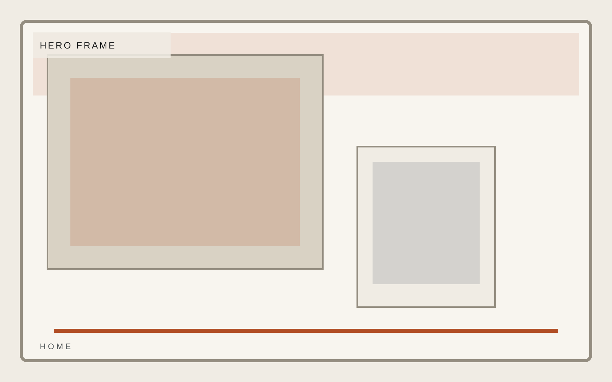
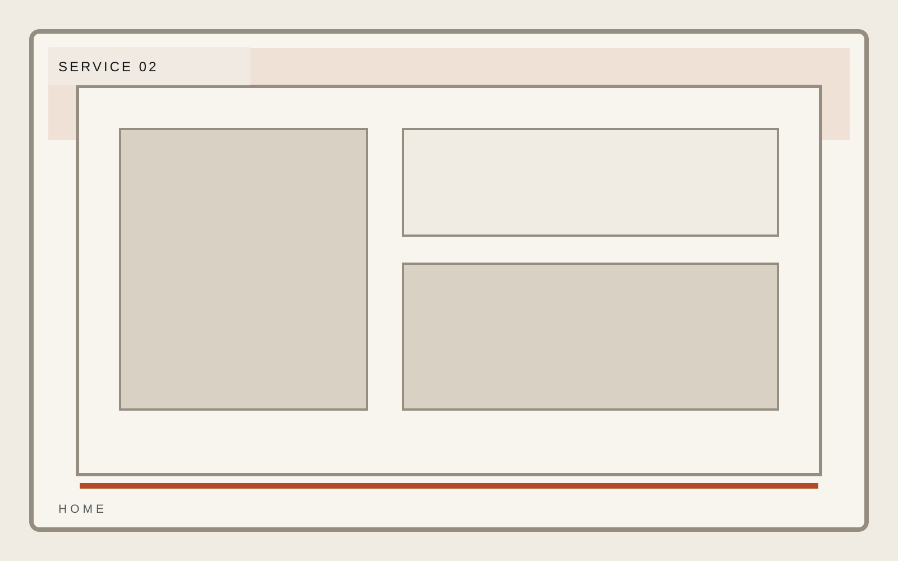
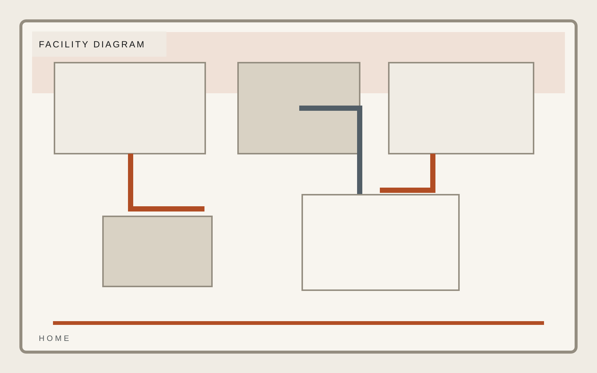
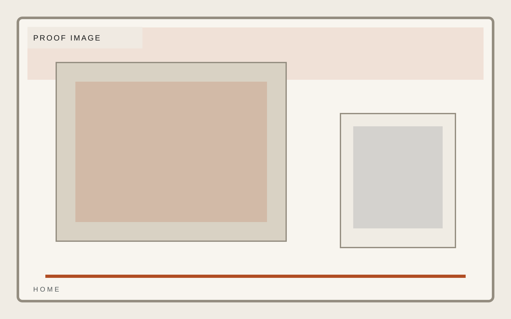

Industrial operations
Technical service capacity without performance theater.
Field response, equipment support, and facility-grade execution for operators who care more about standards than slogans. This template is built for operators who want standards to show up in the first screen.
Response
24 hour field escalation
Coverage
Rotating regional teams
Standard
Facility-first quality control

Industrial operations
Service Pillars
Service pillars should feel earned and practical. Each one needs to communicate a real operating function with the tone of a crew that actually shows up.
Response logic
Technical standards
Field accountability

Industrial operations
Facility
Facility and systems imagery must communicate technical readiness. The page should feel diagrammatic and operational rather than cinematic for its own sake.
Response logic
Technical standards
Field accountability

Industrial operations
Process
Process has to be easy to audit in a screenshot. Show the sequence clearly, from request to field response to documentation and close-out.
- Scope the current state
- Design the operating model
- Validate visually in browser
- Ship without drift
Industrial operations
Proof
Proof should look like an operator built it. Certifications, standards, and customer trust markers should feel solid, not like light marketing garnish.
Response logic
Technical standards
Field accountability

Industrial operations
Contact
Vector Field frames contact as proof of operating readiness, with clear standards, measured copy, and no cosplay ruggedness. This home page stays consistent with the template system while giving this section its own visual weight.
Response logic
Technical standards
Field accountability